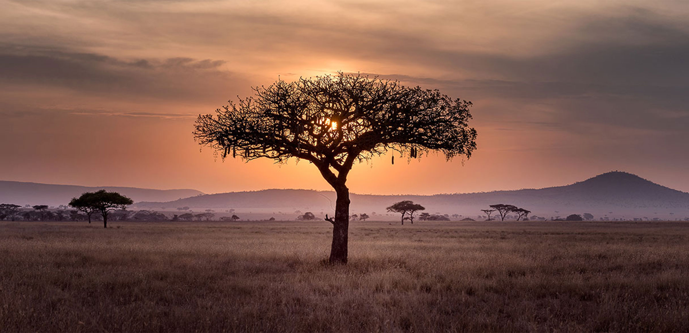
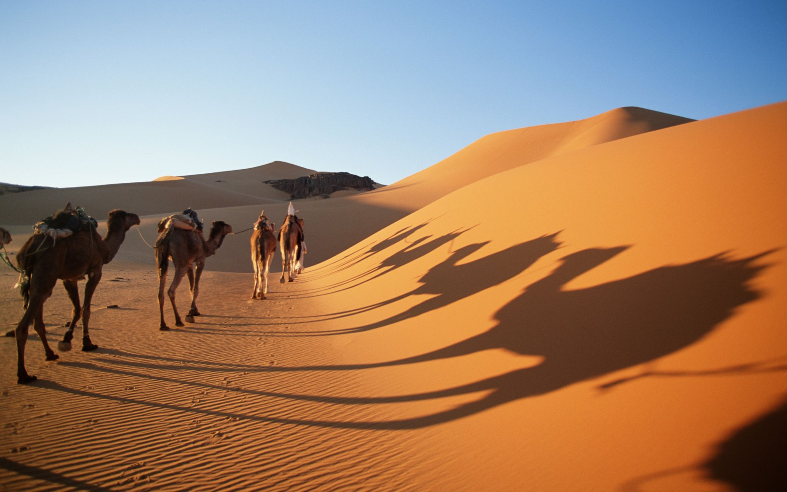

Acerca de África
Explorando la Diversidad Africana

África, el segundo continente más grande y diverso del mundo, alberga una riqueza de culturas, paisajes y tradiciones únicas. Descubre la extraordinaria diversidad que caracteriza a este continente. En África viven una enorme cantidad de distintos pueblos y etnias. Cada uno posee una cultura y una identidad diferente. Para muchos, la mayoría de estas culturas son desconocidas aunque dentro del continente africano son muy comunes
Maravillas Naturales de África
Explorando Paisajes Inolvidables
Embárcate en un viaje a través de los impresionantes paisajes de África, desde las vastas llanuras del Serengueti hasta las majestuosas cataratas Victoria. Descubre la asombrosa biodiversidad y belleza natural.
África es hogar de algunas de las reservas naturales más emblemáticas y animales salvajes únicos en el mundo. Explora la fascinante vida silvestre que habita en estas tierras.
Historia y Legado Africano
Impacto en la Historia Global
La historia de África está marcada por civilizaciones antiguas, movimientos de independencia y contribuciones notables a la sociedad global. Explora sitios históricos que testimonian su legado.
Desde el antiguo Egipto hasta los imperios africanos, África ha desempeñado un papel clave en la configuración del curso de la historia.